โจทย์: กำหนดตาราง Karnaugh Map ขนาด 5 ตัวแปร (อินพุต A, B, C ในแนวแถว และ D, E ในแนวคอลัมน์) ตามแผนภาพที่กำหนดให้
คำสั่ง:
1 (Σm)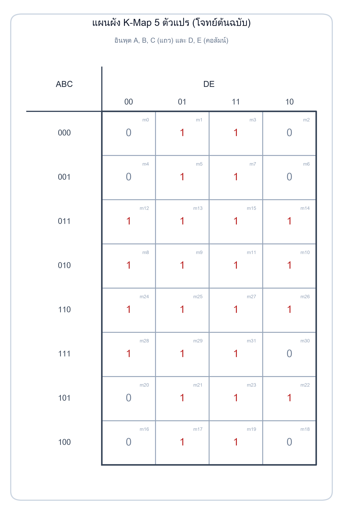
สมการผลบวกของผลคูณขั้นต่ำ (Minimal SOP):
สมการผลคูณของผลบวกขั้นต่ำ (Minimal POS):
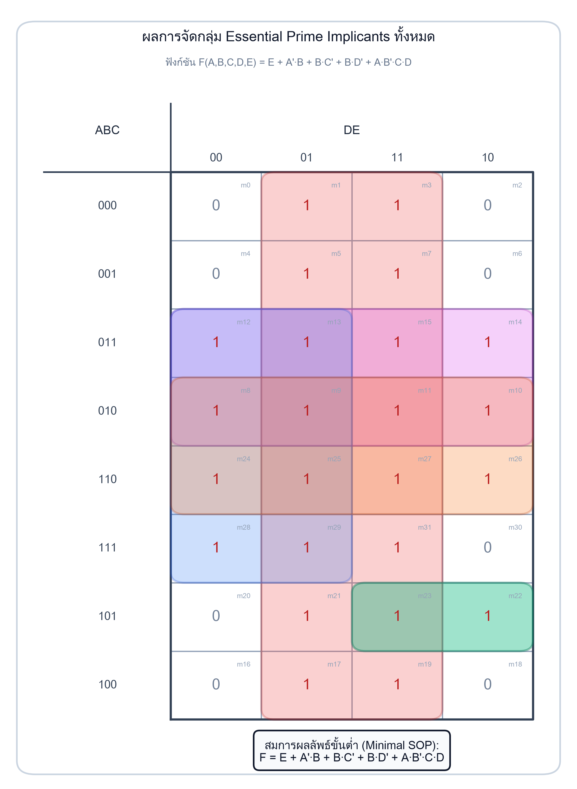
| กลุ่ม | สีไฮไลต์ | ขนาด (ช่อง) | พิกัดในตาราง | ตัวแปรที่ตัดได้ | เทอมผลลัพธ์ | มินเทอมที่จำเป็นเฉพาะกลุ่ม |
|---|---|---|---|---|---|---|
| กลุ่ม 1 | 🟥 สีแดง | 16 | คอลัมน์ DE = 01, 11 (ทุก 8 แถว) | A, B, C, D | E |
m1, m3, m5, m7, m17, m19, m21, m31 |
| กลุ่ม 2 | 🟪 สีชมพู/ม่วง | 8 | แถว ABC = 011, 010 (ทุก 4 คอลัมน์) | C, D, E | A'·B |
m14 (จำเป็นต้องมีกลุ่มนี้) |
| กลุ่ม 3 | 🟦 สีน้ำเงิน | 8 | แถว B=1 (r=2,3,4,5) คอลัมน์ D=0 (c=0,1) | A, C, E | B·D' |
m28 (จำเป็นต้องมีกลุ่มนี้) |
| กลุ่ม 4 | 🟧 สีส้ม | 8 | แถว ABC = 010, 110 (ทุก 4 คอลัมน์) | A, D, E | B·C' |
m26 (จำเป็นต้องมีกลุ่มนี้) |
| กลุ่ม 5 | 🟩 สีเขียว | 2 | แถว ABC = 101, คอลัมน์ DE = 11, 10 | E | A·B'·C·D |
m22 (จำเป็นต้องมีกลุ่มนี้) |
คลิกเปิด/ปิดกลุ่มเพื่อศึกษาการครอบคลุมของแต่ละ Prime Implicant หรือคลิกที่แต่ละช่องเพื่อตรวจสอบพิกัดบิตและเลขมินเทอม:
| ABC \ DE | D E | |||
|---|---|---|---|---|
| 00 | 01 | 11 | 10 | |
ฟังก์ชันที่มี 5 ตัวแปรนำเข้า (A, B, C, D, E) จะมีจำนวนชุดค่าความจริงทั้งหมด 2⁵ = 32 สถานะ (ตั้งแต่ m₀ ถึง m₃₁)
K-Map อาศัยหลักการประชิดเชิงตรรกะ (Logical Adjacency) ซึ่งกำหนดว่า เซลล์สองเซลล์ที่อยู่ติดกันจะต้องมีรหัสบิตต่างกันเพียง 1 บิตเสมอ (Hamming Distance = 1)
000 → 001 → 011 → 010 → 110 → 111 → 101 → 100
สังเกตว่าจากแถวบนสุด (000) ถึงแถวล่างสุด (100) เปลี่ยนแปลงทีละ 1 บิต และแถวล่างสุด (100) สามารถพับขอบชนกับแถวบนสุด (000) ได้เพราะต่างกันแค่บิต A เพียงบิตเดียว!
นอกจากโครงสร้าง 8×4 แล้ว เรายังสามารถมอง K-Map 5 ตัวแปรเป็น ตาราง 4×4 สองตารางซ้อนทับกันใน 3 มิติ โดยตารางแรกคือ A = 0 และตารางที่สองคือ A = 1 ดังรูปที่ 1.1:
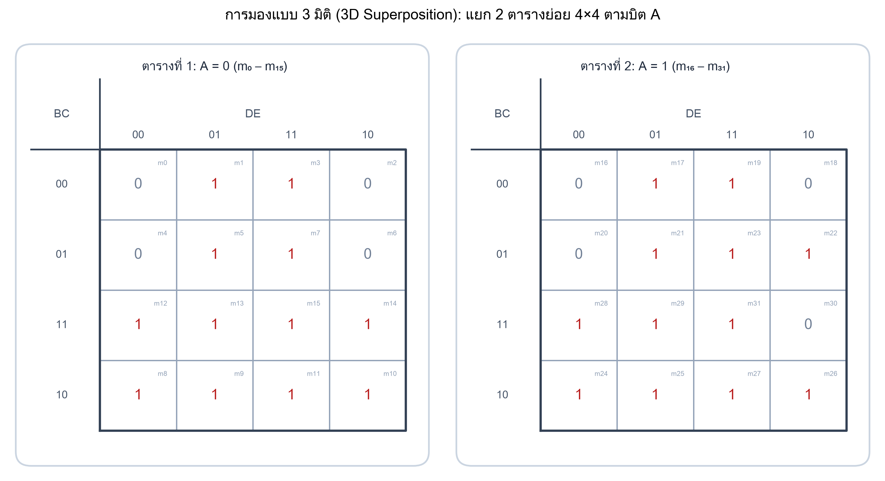
การแปลงรหัสบิต ABC DE เป็นเลขมินเทอมคำนวณจากค่าน้ำหนักฐานสอง m = 16A + 8B + 4C + 2D + E:
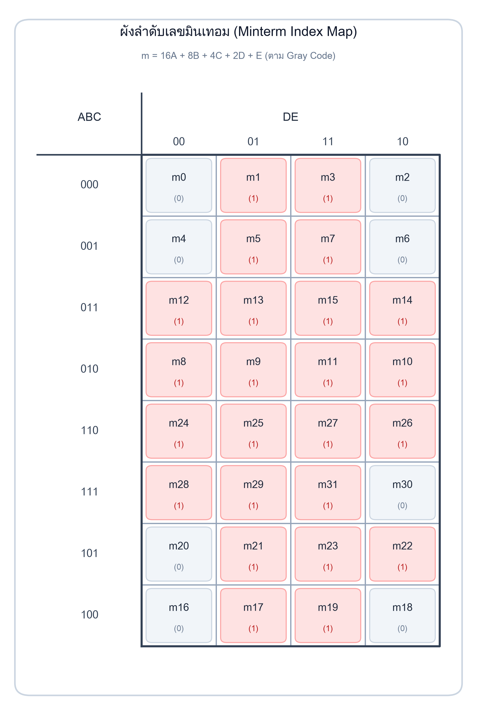
Σm(1, 3, 5, 7, 8, 9, 10, 11, 12, 13, 14, 15, 17, 19, 21, 22, 23, 24, 25, 26, 27, 28, 29, 31)ΠM(0, 2, 4, 6, 16, 18, 20, 30)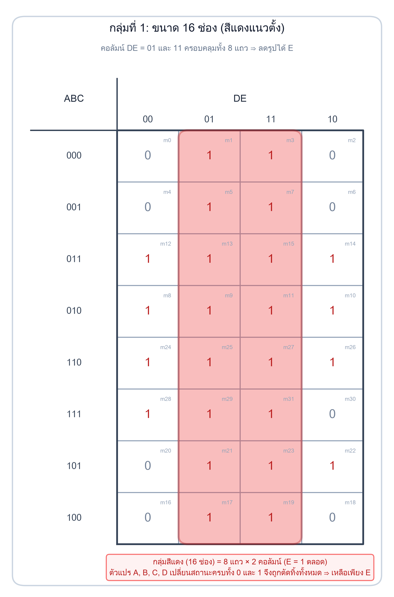
การตัดทอนตัวแปร:
000 ถึง 100 ครบทั้ง 8 แถว ทำให้ A, B, C มีค่าทั้ง 0 และ 1 ครบทุกคู่ จึงตัดทิ้งได้ทั้งหมดDE = 01 และ 11 → ตัวแปร D เปลี่ยนจาก 0 เป็น 1 (ตัดทิ้ง) ส่วนตัวแปร E = 1 ตลอดE (กลุ่มนี้จำเป็นอย่างยิ่งเพราะคลุมมินเทอมคี่ส่วนใหญ่)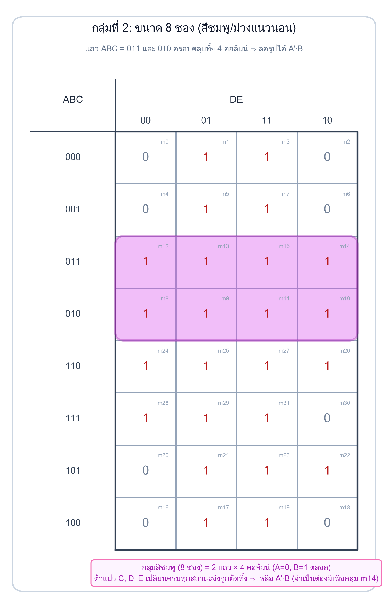
การตัดทอนตัวแปร:
ABC = 011 และ 010 → A = 0 (เขียนเป็น A'), B = 1, ส่วน C เปลี่ยนสถานะ (ตัดทิ้ง)00, 01, 11, 10) → D, E ตัดทิ้งทั้งหมดA'·B (สำคัญ: มินเทอม m₁₄ ถูกคลุมโดยกลุ่มนี้เพียงกลุ่มเดียวเท่านั้น!)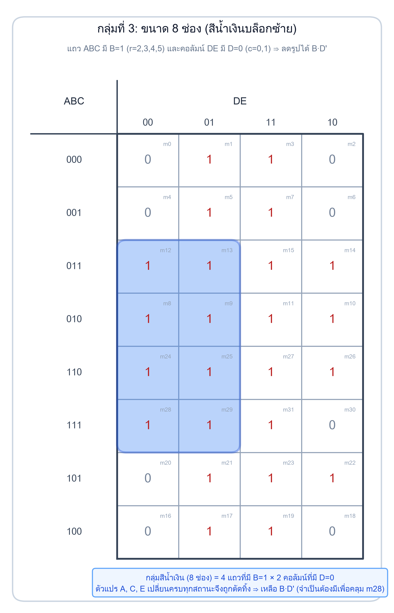
การตัดทอนตัวแปร:
011, 010, 110, 111 (4 แถวติดกันที่มี B = 1) → ตัวแปร A และ C มีครบทั้ง 0 และ 1 จึงตัดทิ้ง เหลือ BDE = 00 และ 01 → D = 0 (เขียนเป็น D'), ส่วน E เปลี่ยนสถานะ (ตัดทิ้ง)B·D' (สำคัญ: มินเทอม m₂₈ ถูกคลุมโดยกลุ่มนี้เพียงกลุ่มเดียวเท่านั้น!)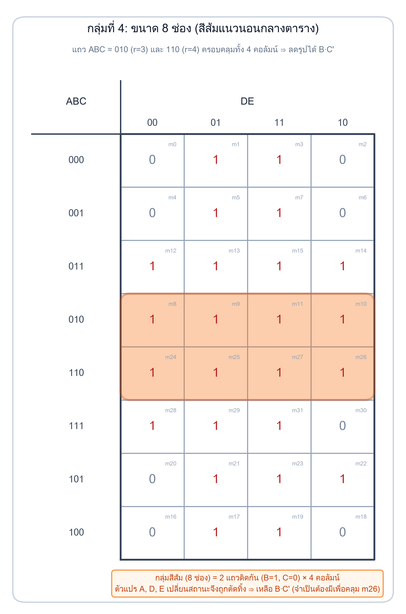
การตัดทอนตัวแปร:
010 และ 110 (ประชิดกันใน Gray Code) → A เปลี่ยนจาก 0 เป็น 1 (ตัดทิ้ง), B = 1, C = 0 (เขียนเป็น C')D, E ตัดทิ้งทั้งหมดB·C' (สำคัญ: มินเทอม m₂₆ ถูกคลุมโดยกลุ่มนี้เพียงกลุ่มเดียวเท่านั้น!)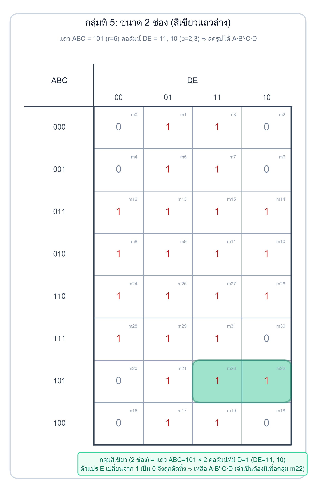
การตัดทอนตัวแปร:
ABC = 101 → A = 1, B = 0 (B'), C = 1 (ไม่มีตัวแปรใดเปลี่ยนสถานะ)DE = 11 และ 10 → D = 1 คงที่, ส่วน E เปลี่ยนจาก 1 เป็น 0 (ตัดทิ้ง)A·B'·C·D (สำคัญ: มินเทอม m₂₂ ถูกคลุมโดยกลุ่มนี้เพียงกลุ่มเดียวเท่านั้น!)เพื่อยืนยันว่า ไม่มีกลุ่มใดเป็นกลุ่มฟุ่มเฟือย (Redundant Group) เราสร้างตาราง Prime Implicant Chart เพื่อระบุว่าแต่ละกลุ่มมีมินเทอมที่ไม่มีกลุ่มอื่นคลุมเลย (Unique Minterm) หรือไม่:
| Prime Implicant | จำนวนมินเทอมที่คลุม | มินเทอมที่จำเป็นเฉพาะตัว (Unique Minterms) | สถานะ |
|---|---|---|---|
E |
16 มินเทอม | m₁, m₃, m₅, m₇, m₁₇, m₁₉, m₂₁, m₃₁ (8 ช่อง) |
Essential PI |
A'·B |
8 มินเทอม | m₁₄ (แถว 011 คอลัมน์ 10) |
Essential PI |
B·C' |
8 มินเทอม | m₂₆ (แถว 110 คอลัมน์ 10) |
Essential PI |
B·D' |
8 มินเทอม | m₂₈ (แถว 111 คอลัมน์ 00) |
Essential PI |
A·B'·C·D |
2 มินเทอม | m₂₂ (แถว 101 คอลัมน์ 10) |
Essential PI |
การหาผลคูณของผลบวกขั้นต่ำ (Minimal POS) ทำได้โดยการจัดกลุ่ม เลข 0 ทั้ง 8 ช่อง (ได้แก่ m₀, m₂, m₄, m₆, m₁₆, m₁₈, m₂₀, m₃₀):
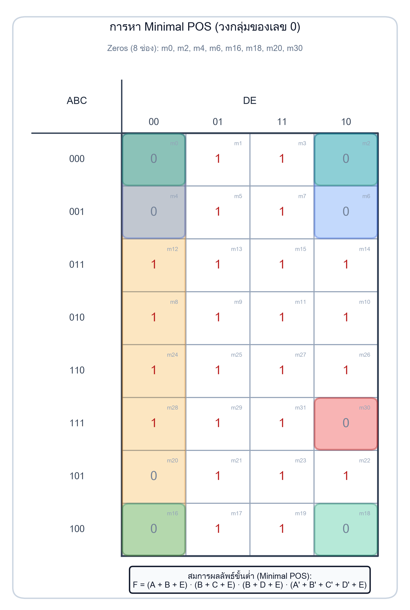
| กลุ่ม Maxterm | ขนาด | แมกซ์เทอมที่ครอบคลุม | เทอมใน F' | Maxterm Sum Term ใน F |
|---|---|---|---|---|
| กลุ่ม 1 (พับขอบซ้ายขวา) | 4 | M₀, M₂, M₄, M₆ |
A'·B'·E' |
(A + B + E) |
| กลุ่ม 2 (4 มุมขอบบนล่าง) | 4 | M₀, M₂, M₁₆, M₁₈ |
B'·C'·E' |
(B + C + E) |
| กลุ่ม 3 (แถว 0,1,6,7 คอลัมน์ 00) | 4 | M₀, M₄, M₁₆, M₂₀ |
B'·D'·E' |
(B + D + E) |
| กลุ่ม 4 (ช่องเดี่ยว) | 1 | M₃₀ |
A·B·C·D·E' |
(A' + B' + C' + D' + E) |
ทดลองปรับสวิตช์อินพุต A, B, C, D, E เพื่อดูสถานะสัญญาณและการทำงานของวงจรจริงแบบเรียลไทม์:
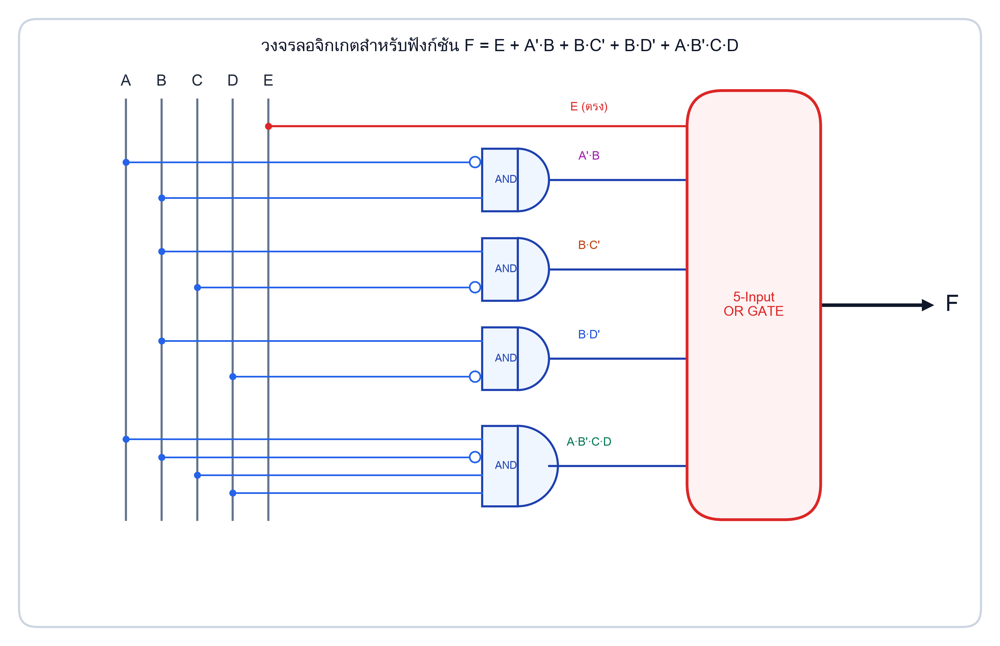
ลำดับที่ถูกต้องคือ 000, 001, 011, 010, 110, 111, 101, 100
ข้อควรระวัง: นักศึกษามักเผลอเขียน 100, 101, 110, 111 แบบ Binary ปกติ ซึ่งจะทำให้คุณสมบัติ Hamming Distance = 1 เสียไป และไม่สามารถวงกลุ่มติดกันได้!
บางคนอาจพยายามวงกลุ่ม m8, m9, m10, m11 ซ้ำซ้อน แต่เมื่อตรวจสอบจะพบว่ามินเทอมทั้ง 4 ช่องนี้ถูกคลุมด้วยกลุ่มสีชมพู (A'·B) และกลุ่มสีส้ม (B·C') ไปหมดแล้ว จึงห้ามใส่ซ้ำเด็ดขาด
ที่แถว 101 คอลัมน์ 11, 10 (มินเทอม m₂₃, m₂₂) มีค่าเป็น 1 แต่ช่องข้างบน (m₃₀ ที่แถว 111) มีค่าเป็น 0 และช่องข้างล่าง (m₁₈ ที่แถว 100) มีค่าเป็น 0 เช่นกัน ทำให้กลุ่มนี้ขยายแนวตั้งไม่ได้ จึงได้ขนาดเพียง 2 ช่อง (เทอม 4 ตัวแปร A·B'·C·D)